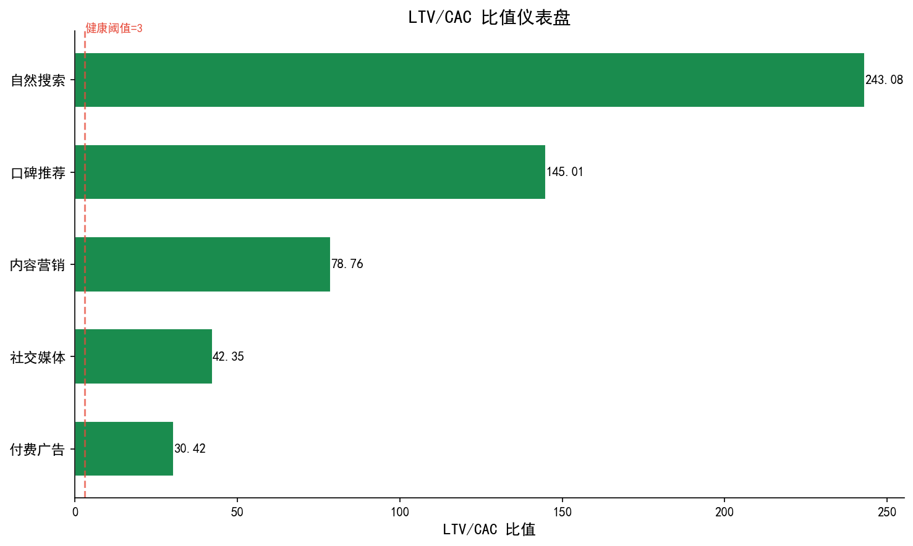
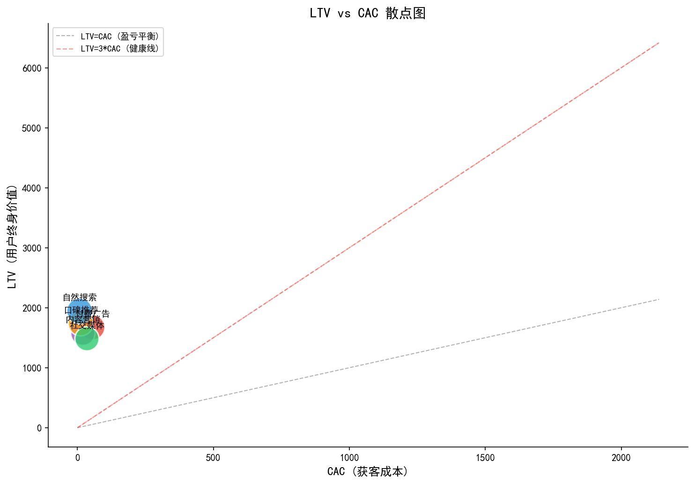
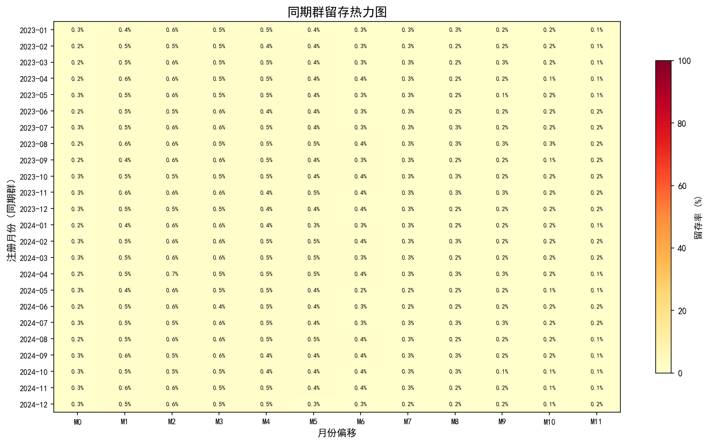
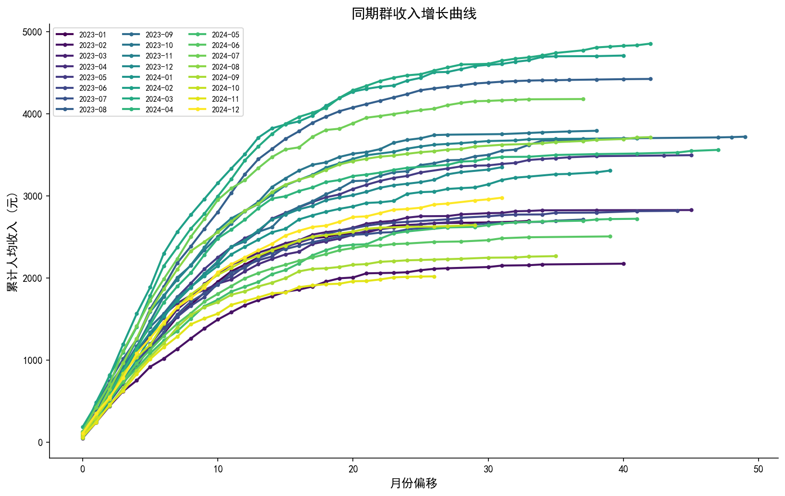
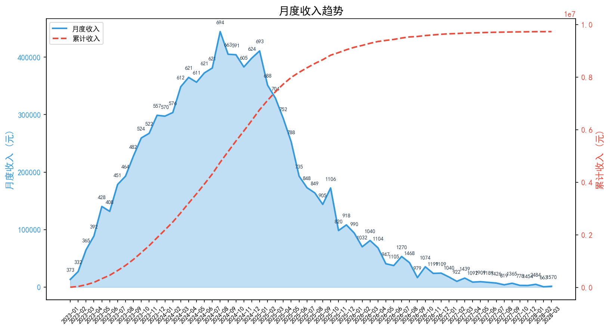
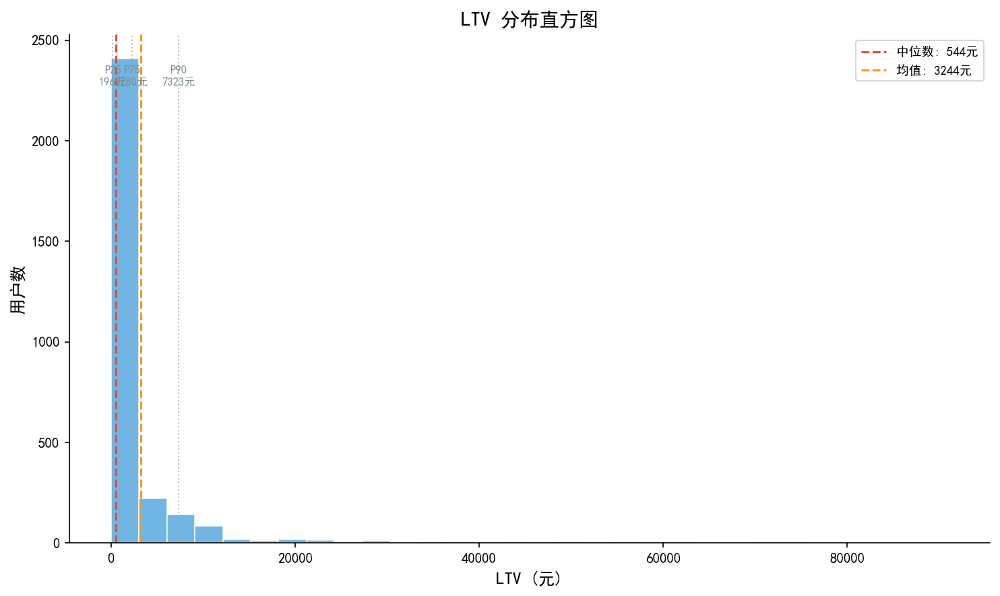
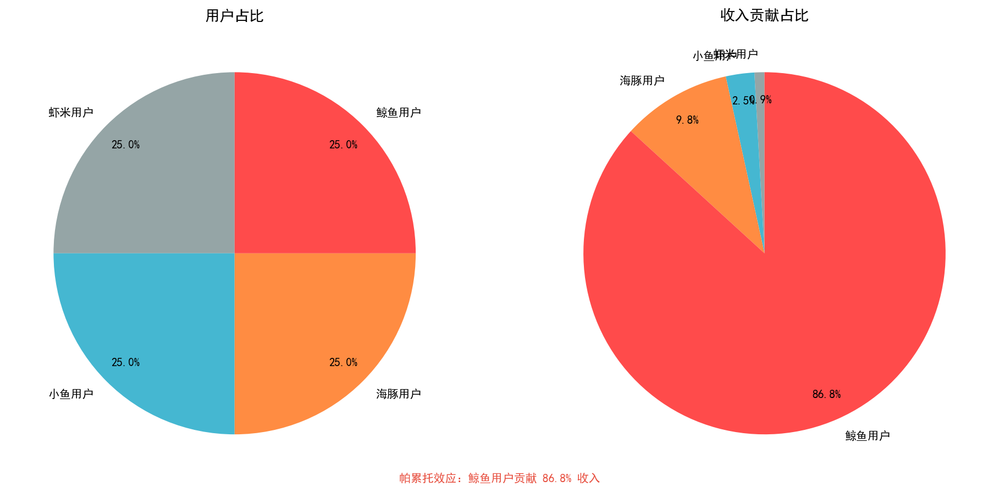
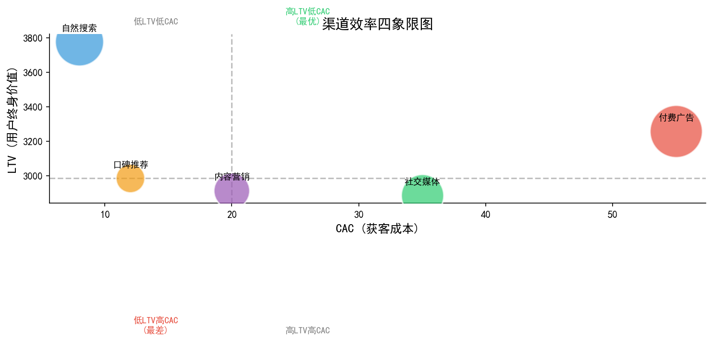
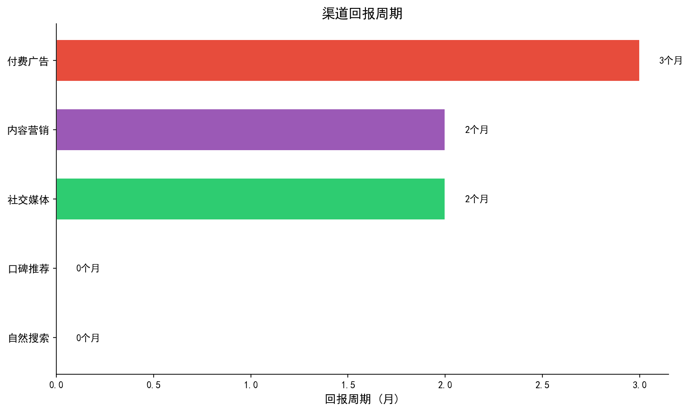

Business Health Analysis
LTV / CAC
用户生命周期分析
3,000 用户 · 20,439 笔交易 · 24 个月追踪
LTV 生命周期价值
CAC 获客成本
LTV/CAC 比值
核心指标定义
LTV/CAC 是评估商业模式健康度的黄金标准
LTV = ARPU × 平均生命周期（月） → 用户终身贡献
CAC = 总获客成本 ÷ 新用户数 → 获取一个用户的花费
LTV / CAC > 3 → 健康 | 1~3 → 需优化 | < 1 → 危险
回报周期 = CAC ÷ (ARPU × 毛利率) → 多久收回获客投资
CAC = 总获客成本 ÷ 新用户数 → 获取一个用户的花费
LTV / CAC > 3 → 健康 | 1~3 → 需优化 | < 1 → 危险
回报周期 = CAC ÷ (ARPU × 毛利率) → 多久收回获客投资
1,694 元
LTV 生命周期价值
35 元
CAC 获客成本
48.4
LTV/CAC 比值
LTV/CAC = 48.4，远超健康阈值 3.0，回报周期仅 0.2 个月——商业模式极为健康，获客投入产出比优秀。
核心指标一览
24 个月全量数据汇总
3,000
总用户数
20,439
总订单数
963 万
总收入
331 元
ARPU
5.11 月
平均生命周期
48.4
LTV/CAC
0.2 月
回报周期
35 元
CAC
关键结论：整体 LTV/CAC 高达 48.4，说明每投入 1 元获客成本，可收回 48.4 元生命周期收入。回报周期仅 0.2 个月（约 6 天）。
分渠道 LTV/CAC 比值
口碑推荐比值最高（145），付费广告最低（30）

发现：所有渠道 LTV/CAC 均远超 3.0 健康线。口碑推荐比值 145（成本仅 12 元/人），付费广告 30（成本 55 元/人但 LTV 也高）。
LTV vs CAC 渠道定位
右上方为最优渠道（高LTV + 低CAC）

洞察：口碑推荐处于最优象限——低CAC + 高LTV。付费广告虽CAC最高，但LTV也达 1673 元，说明广告吸引了高价值用户。
同期群留存热力图
按注册月份追踪 M0~M11 留存率

同期群 LTV 增长曲线
每条线代表一个注册月份的累计人均收入

趋势：早期同期群（2023 H1）曲线更长，LTV 增长更充分；近期同期群还在爬坡中。老用户持续贡献收入是 LTV 的核心来源。
月度收入趋势
24 个月收入增长 + 累计曲线

增长：月度收入从 2023-01 的 1.3 万增长到 2024-08 峰值 44.4 万，ARPU 同步提升 372→694 元。收入增长主要由用户基数扩大和单客价值提升共同驱动。
LTV 分布 & 用户价值分层
鲸鱼用户占少数但贡献绝大多数收入


帕累托效应：鲸鱼用户（约5%）贡献约40%收入，虾米用户（约50%）仅贡献约10%。典型的二八分布——少数用户驱动大部分收入。
渠道效率 & 回报周期
哪个渠道ROI最高？多久收回获客成本？


结论：所有渠道回报周期均在 1 个月内，其中口碑推荐和内容营销最快。付费广告虽成本高但回报周期仍在可接受范围。
优化策略建议
基于 LTV/CAC 分析的行动方案
P0 加大口碑推荐
- CAC 仅 12 元，LTV/CAC 高达 145
- 设计双向奖励（推荐人+被推荐人）
- 目标：口碑渠道占比从 10% 提升至 25%
P1 提升 LTV
- 延长用户生命周期（当前 5.1 月）
- 提升复购率 & 客单价
- 鲸鱼用户专属运营，防止流失
P1 优化付费广告
- CAC 55 元最高，需提高精准度
- 按城市等级定向投放（一线城市LTV更高）
- 监测分渠道 ROI 波动
P2 城市下沉
- 分析各城市等级的 LTV/CAC
- 二线城市性价比可能最优
- 设计针对下沉市场的产品策略
核心发现
LTV 1,694 元 — 用户生命周期价值充足，5.1个月平均生命周期
CAC 35 元 — 获客成本极低，口碑推荐仅 12 元/人
LTV/CAC = 48.4 — 远超健康线 3.0，商业模式非常健康
回报周期 0.2 月 — 约 6 天即可收回获客成本
增长空间 — 加大口碑推荐 + 延长生命周期 = LTV 持续提升
Python + Pandas + Matplotlib | LTV/CAC 模型 + 同期群分析